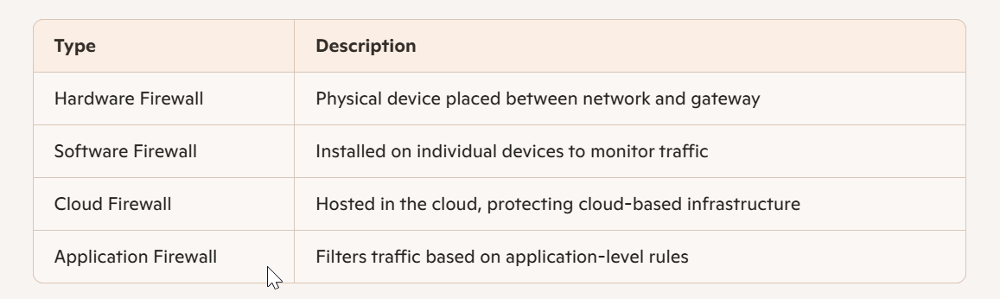
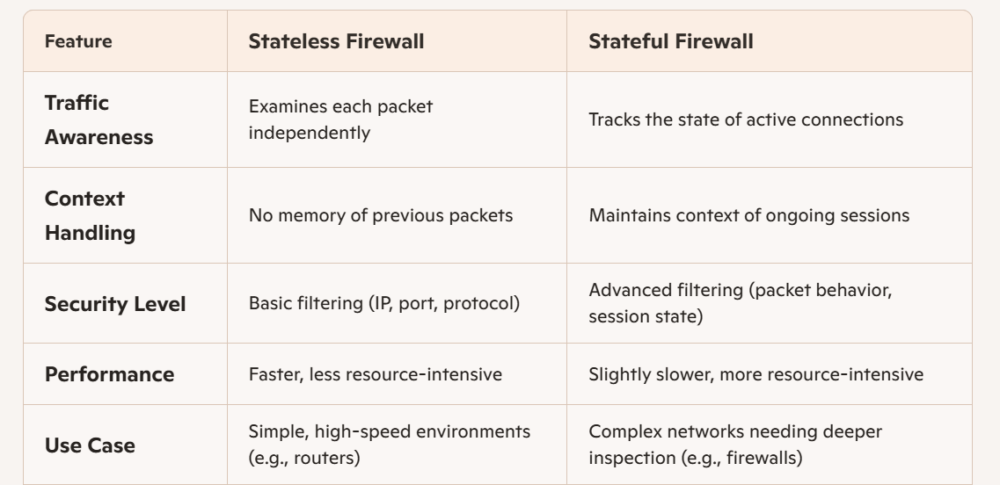
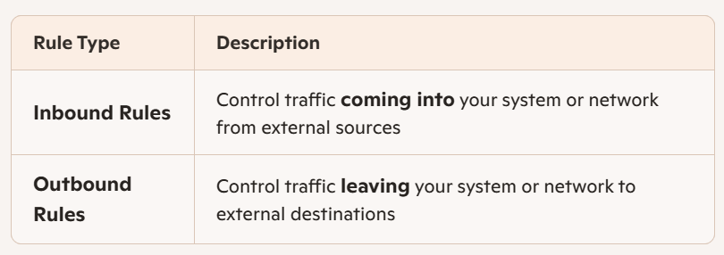

1.What is a firewall?
A firewallis a network security device (or software) that monitors and controls incoming and outgoing traffic based on predefined rules. Its main job is to create a protective barrier between a trusted internal networkand untrusted external networks, such as the internet.
How It Works
Packet Filtering:Inspects data packets and allows or blocks them based on IP addresses, ports, or protocols.
Stateful Inspection:Tracks the state of active connections and makes decisions based on context.
Proxy Service:Acts as an intermediary between users and the internet, hiding internal network details.
Next-Gen Firewalls (NGFW):Include deep packet inspection, intrusion prevention, and application-level filtering.
Types of Firewalls

Why It Matters
Blocks unauthorized access
Prevents malware and cyberattacks
Enforces organizational security policies
Logs traffic for auditing and analysis
2.Difference between stateful and stateless firewall?
Stateful vs Stateless Firewalls

Analogy
Think of a stateless firewalllike a bouncer who checks each person at the door without remembering who came in before. A stateful firewallis like a concierge who knows which guests are already inside and what they’re doing.
3.What are inbound and outbound rules? Inbound vs Outbound Rules in Firewalls

How They Work
Inbound Rule Example:Allow HTTP traffic (port 80) from the internet to a web server.
Outbound Rule Example:Allow internal users to access external DNS servers (port 53).
Why They Matter
Inbound rulesprotect against unauthorized access and external threats.
Outbound rulesprevent data exfiltration and control what internal systems can reach.
Best Practices
Use least privilege: only allow traffic that’s necessary.
Regularly audit rules to avoid misconfigurations.
Combine with logging and monitoring for visibility.
4.How does UFW simplify firewal management?
UFW (Uncomplicated Firewall) is a simple front end for managing Linux iptables rules that makes firewall configuration accessible and less error prone by exposing an intuitive command set and sensible defaults
How UFW simplifies firewall management
Simple command syntax— single-line commands to allow or deny services reduce complexity compared with raw iptables rules
Secure defaults— UFW ships with conservative defaults so systems start in a safer state without extra configuration.
Application profiles— prebuilt profiles let you allow common services by name instead of ports, reducing mistakes and saving time
IPv6 support built in— UFW supports IPv6 alongside IPv4 without extra manual configuration.
Logging and status commands— easy commands to view active rules and logs improve visibility for admins.
Best practices when using UFW
Use least privilege: only allow required ports and services.
Enable loggingat an appropriate level for threat hunting and troubleshooting.
Apply application profileswhen available to avoid exposing extra ports.
Test rules with a management session(keep an open admin SSH session until you confirm remote access works).
Combine UFW with higher-level network controls(cloud security groups, host-based intrusion detection) for layered defense.
5.Why block port 23 (Telnet)?
Port 23 is the well-known TCP port assigned to the Telnet protocol, which provides plain-text, remote command-line access to devices over a network.
Why block port 23
No encryption— Telnet sends usernames, passwords, and commands in clear text, allowing attackers who can sniff traffic to capture credentials.
High exploit surface— Many legacy Telnet implementations and embedded devices contain unpatched vulnerabilities that attackers can abuse.
Automated scanning and brute force— Port 23 is commonly scanned by bots and adversaries looking for weak credentials or exposed devices.
Risk of lateral movement and persistence— If compromised via Telnet, attackers often use the access to move laterally, implant backdoors, or exfiltrate data.
Noncompliance with modern security policies— Most security standards and best practices require encrypted remote management and deny insecure protocols.
Typical blocking scope
Block at perimeter firewalls to prevent inbound Telnet from the internet.
Block or restrict outbound Telnet for user hosts to prevent unauthorized remote access attempts.
Deny Telnet on cloud security groups and on host-based firewalls by default
Safer alternatives
Use SSH (port 22) with strong key-based authentication and hardened configurations.
Use VPN or management jump hosts/bastion hosts for administrative access combined with multifactor authentication.
Use centralized management/orchestration and audited remote command execution tools.
Practical mitigations if Telnet must remain
Restrict access by IP allowlists and network segmentation.
Run Telnet only on isolated management networks, never on general production networks.
Monitor and log all access; deploy intrusion detection and rate-limiting.
Apply compensating controls such as jump hosts, strict credential policies, and continuous vulnerability management.
6.What are common firewal mistakes? Common firewall mistakes
Overly permissive rules— Allowing many open ports or broad IP ranges increases attack surface and lets unnecessary traffic through; apply least privilege and close unused ports.
Unrestricted management access— Exposing the firewall management interface to general networks or the internet lets attackers target device controls; restrict management to isolated VLANs or management networks and use strong authentication.
Lack of rule ordering and cleanup— Redundant, shadowed, or obsolete rules cause unexpected behavior and hide risky permissions; regularly audit, reorder, and remove stale rules.
Using any/any or wide network objects— Relying on generic objects like any/any or large CIDR blocks makes intent unclear and creates blind spots; use specific hosts, ports, and narrow network ranges.
Missing outbound controls— Only filtering inbound traffic leaves data-exfiltration and malware callbacks unchecked; enforce outbound policies and monitor egress traffic.
Weak or inconsistent logging and monitoring— Poor logging settings or not reviewing logs reduce detection capability; enable adequate logging, centralize logs, and integrate with SIEM.
Not testing changes or lacking change control— Applying rules without testing or rollback procedures risks outages and misconfigurations; test in staging, use versioned configs, and keep a rollback plan.
Quick mitigations
Audit schedule:run periodic rule reviews and automated analysis.
Principle of least privilege:allow only required traffic.
Change control:test changes, use versioning, and maintain rollback procedures.
Visibility:enable logging, centralize logs, and correlate with endpoint and network telemetry.
7.How does a firewal improve network security?
A firewall enforces network access rules at the boundary between trusted and untrusted networks, acting as a first line of defense that blocks unwanted traffic and reduces the attack surface
Primary functions
Traffic filtering— Allows or blocks packets based on IP, port, protocol, or application.
State tracking— Applies context-aware decisions for established connections.
Application awareness— Identifies and enforces rules for specific applications and services.
Logging and alerting— Records traffic events for detection and forensic analysis.
Policy enforcement— Centralizes and enforces security policies across hosts and segments.
Concrete security benefits
Prevents unauthorized accessby denying connections that violate policy.
Reduces malware exposureby blocking known malicious endpoints and risky services.
Limits lateral movementby segmenting networks and restricting inter-zone traffic.
Controls data exfiltrationwith outbound rules and deep inspection.
Improves visibility and detectionthrough logs and integration with monitoring and SIEM systems
Best-practice checklist
Apply least-privilege rules and deny by default.
Restrict administrative access to management networks only.
Regularly audit and remove stale rules.
Enable and forward logs to a central collector or SIEM.
Use application-aware and TLS inspection selectively where needed.
8.What is NAT in firewalls? Network Address Translation
Network Address Translation (NAT)is a technique firewalls and routers use to rewrite IP address information in packet headers so devices on a private network can communicate with external networks while sharing one or more public IP addresses
How NAT works in firewalls
Outgoing traffic translation: The firewall replaces a private source IP with a public IP and records the mapping so return packets are forwarded to the correct internal host
Incoming traffic blocking by default: Unsolicited inbound packets are dropped because no mapping exists unless an explicit mapping or port forward is configured.
Stateful mapping: The firewall tracks active translations and connection state to route responses correctly and allow only expected return traffic
Common NAT types implemented by firewalls
Static NAT (one-to-one): Maps a single internal IP to a single public IP for consistent inbound reachability.
Dynamic NAT (many-to-many): Maps internal IPs to a pool of public IPs on demand.
Port Address Translation PAT (many-to-one): Also called NAT overload; maps many private hosts to one public IP by using unique source ports.
Limitations and considerations
Breaks end-to-end addressingfor protocols that embed IPs or use multiple ports requiring application-level helpers or NAT traversal.
Complicates logging and forensicsbecause mappings must be correlated to identify specific internal hosts.
Not a substitute for firewall policy: NAT controls addressing and reachability while firewall rules and application inspection enforce security intent.
Typical use cases
Small networks and home routers using PAT to share one public IP.
Per-server static NAT for hosting public services while keeping internal addressing private.
Firewalls combining NAT with ACLs and application inspection to control and log traffic.